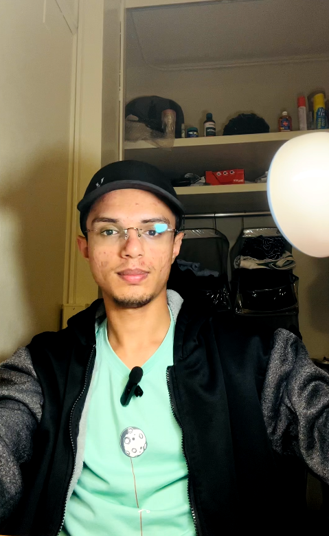
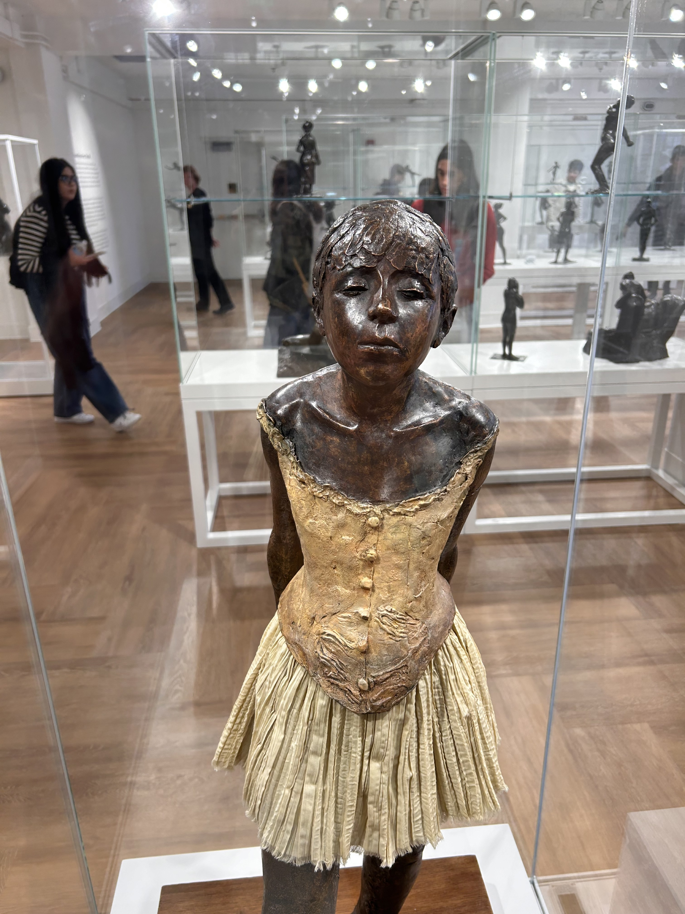

In SCLA 110: Foundations of Intercultural Communication, I explored how language shapes our understanding of other cultures and ourselves. Through weekly readings, reflective journals, in-class discussions, and multimedia assignments, I learned to recognize cultural assumptions, analyze communicative strategies, and adapt my voice for diverse audiences. Assignments like video blogs pushed me to practice clear, listener-friendly speech, while my reading journals deepened my critical thinking by linking theory to personal experience. A field-trip ethnography on Purdue’s cultural festival challenged me to observe, document, and interpret social rituals in real time. Collectively, these experiences sharpened my academic writing, bolstered my presentation skills, and laid a foundation for complex intercultural interactions—skills that continue to inform both my coursework and my personal growth as a global communicator.
Video Blog Introduction
For our first video blog, I recorded a two-minute self-introduction focusing on my cultural background and learning goals. This assignment taught me how to storyboard ideas, maintain eye contact on camera, and use concise language to engage viewers. Feedback from peers helped me refine my pacing and tone, building confidence in public digital speaking.

Recording my first video blog, November 2024.
Degas Sculpture Exhibition
At the Edgar Degas: Sculpture exhibition, I walked among his bronzes and unfinished wax studies, gaining insight into his process of capturing movement and form. Seeing how his late-nineteenth-century works blend realism with impressionist expression deepened my appreciation for the narrative potential of three-dimensional art and the creative choices behind each patina and contour.

Viewing Degas bronzes at the exhibition, October 2024.
Native American Cultural Center Visit
On a field-trip with my SCLA 110 class, we toured Purdue’s Native American Cultural Center. The receptionist guided us through traditional exhibits, shared stories behind each artifact, and explained contemporary tribal practices. This immersive visit highlighted the importance of preserving cultural heritage, deepened my respect for Indigenous perspectives, and showed how storytelling connects past and present communities.
Visiting the Native American Cultural Center during our SCLA 110 field trip, October 2024